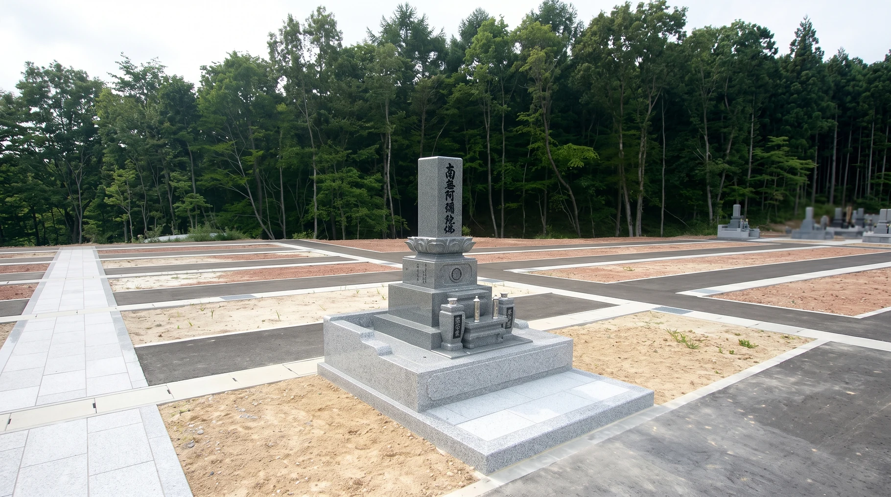
和型墓石
昔から受け継がれてきた、伝統的なお墓の形。地域によって段数や寸法などにも違いがあります。
BUILD A GRAVE
GRAVE STYLE
伝統の形から、ご家族らしい形まで。

昔から受け継がれてきた、伝統的なお墓の形。地域によって段数や寸法などにも違いがあります。
背を抑えた洋型墓石から、自由な形のデザイン墓まで。石の組み合わせや文字、意匠、墓地との調和など、ご希望に合わせて考えることができます。
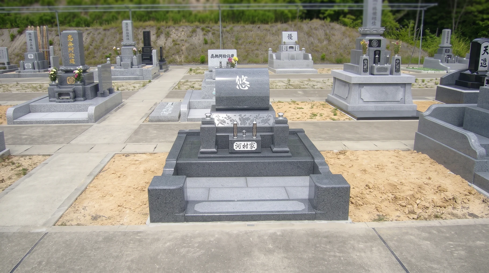
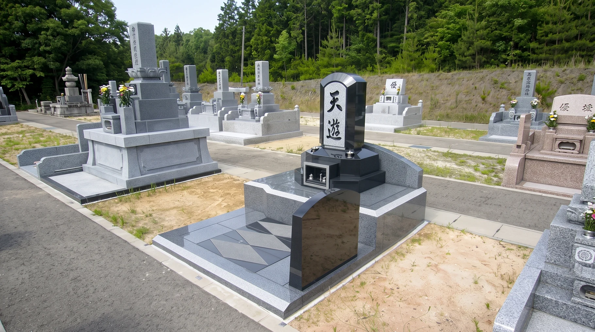
STONE SELECTION
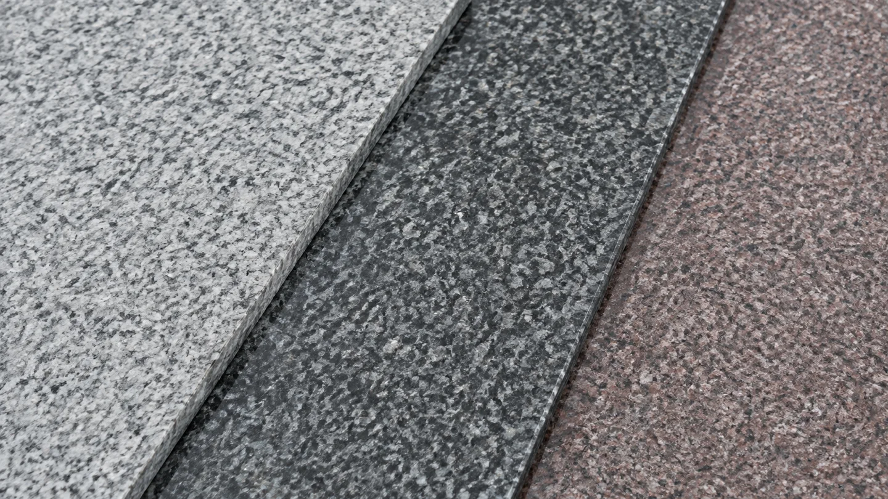
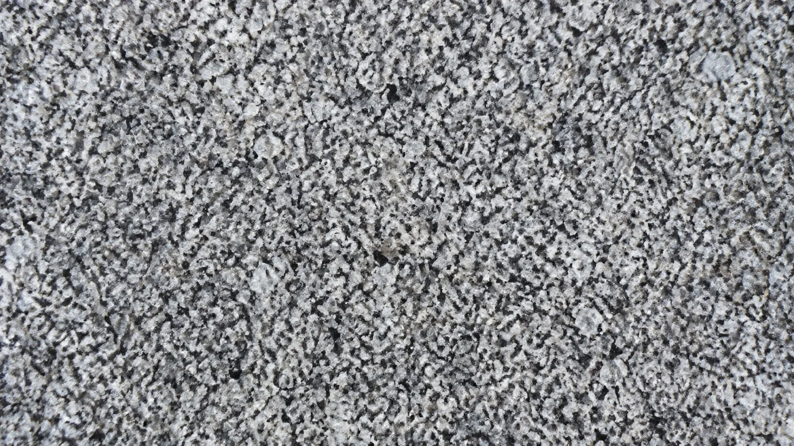
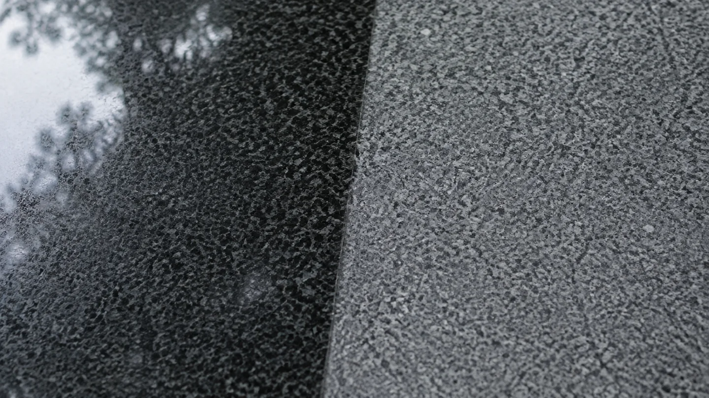
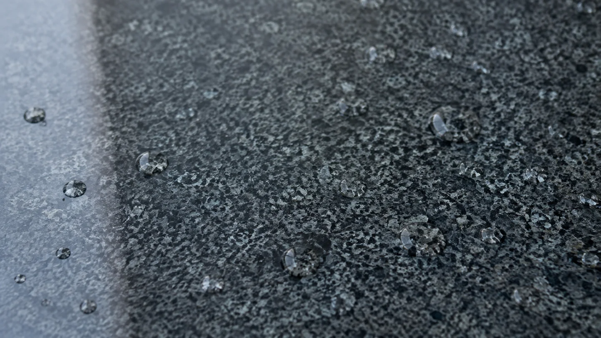
見た目だけでなく、長く使うための性質まで。
どの石も必ず多少の水を吸います。ただし、吸い込む量や、吸った水分を外へ出す速さは石によって違います。
石川・能登では、雨や雪、冬場の凍結、海に近い環境を考える必要があります。だから番谷石材店では、吸水率を特に意識し、経年劣化に耐えられる石をおすすめしています。
BUDGET AND DESIGN
お墓の費用は、石材だけでなく、大きさや加工、墓地の条件まで含めて決まります。
同じように見えるお墓でも、使う石の種類や量、文字や加工、墓地の状況によって必要な費用は変わります。現地を確認し、ご希望とご予算を伺いながら、無理のない内容を整理してご提案します。
FIRST CONSULTATION
そんなところから、一緒に整理していきます。
BUILDING FLOW
ご相談から完成まで、一つずつ確認しながら進めます。
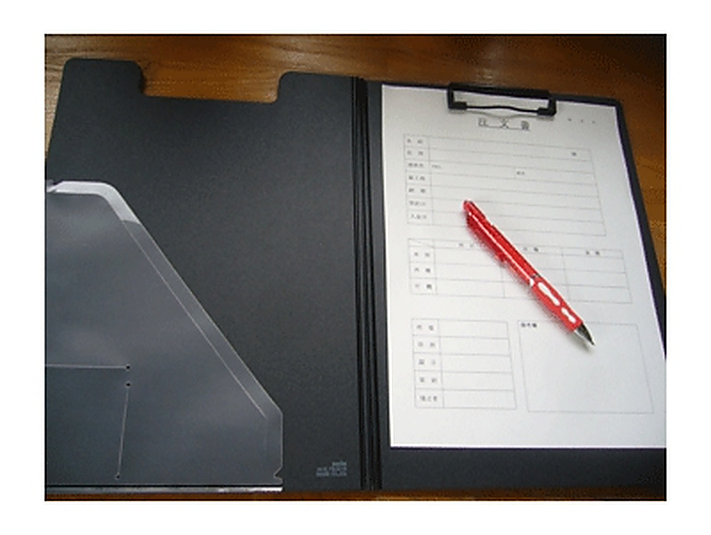
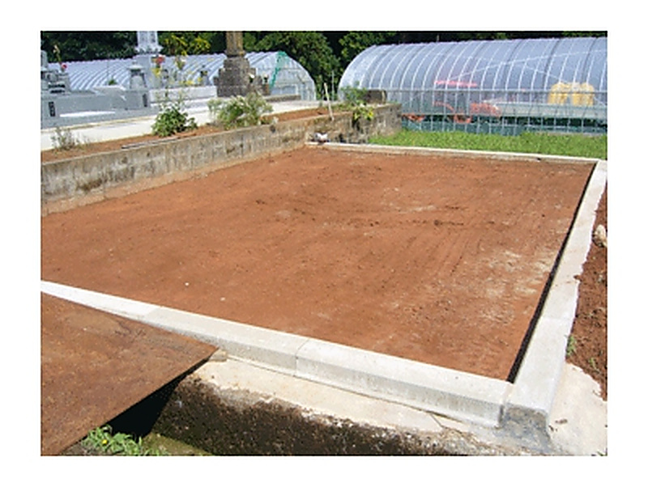
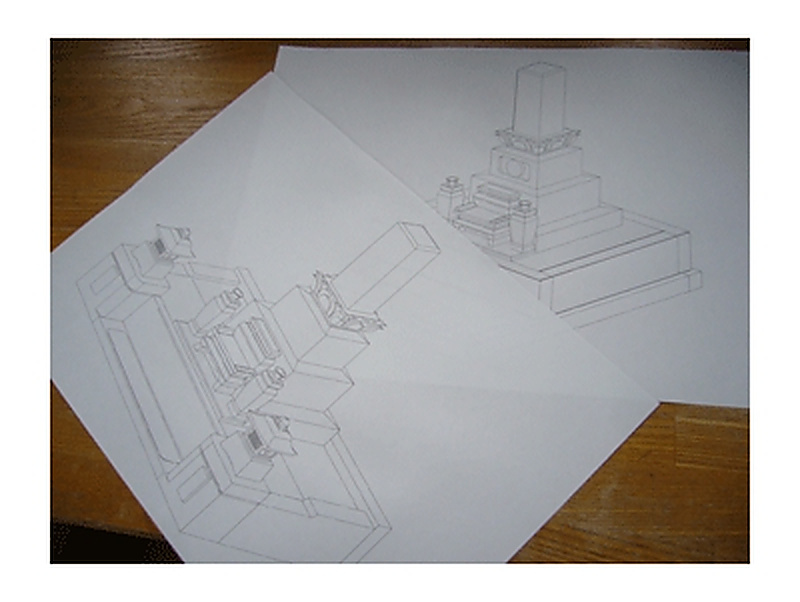
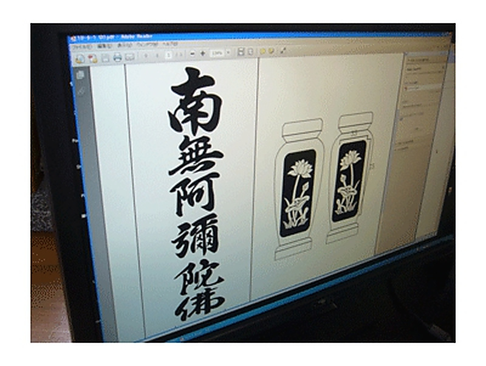
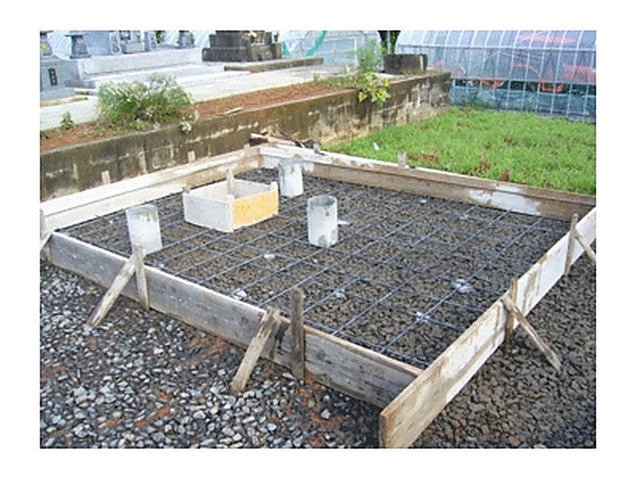
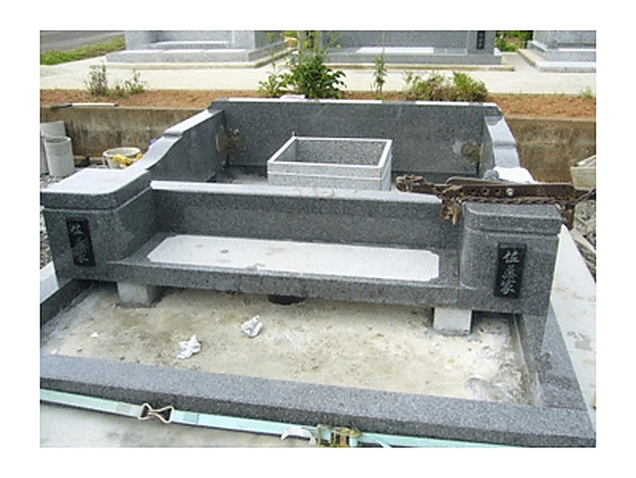
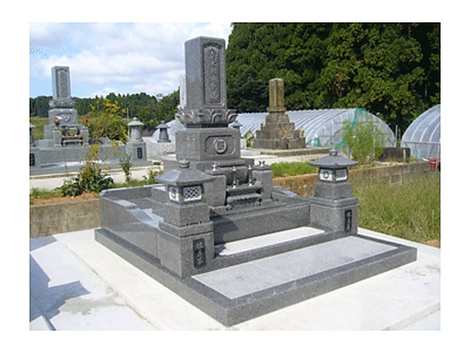
BUILT WORKS
これまでに手がけたお墓の一部をご紹介します。
さまざまな施工事例は、施工事例ページでご覧いただけます。

日本ならではの趣を感じる、凛とした装い。伝統文化を大切に、新たなお墓の形をご提案します。

故人らしさや、ご家族の想いを大切に。石の組み合わせや文字まで、最高の形を考えます。
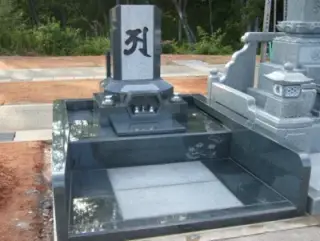
「あの人は、桜が好きだった」「いつも笑顔だった」。その人を思い出す想いを、お墓の形にしていきます。